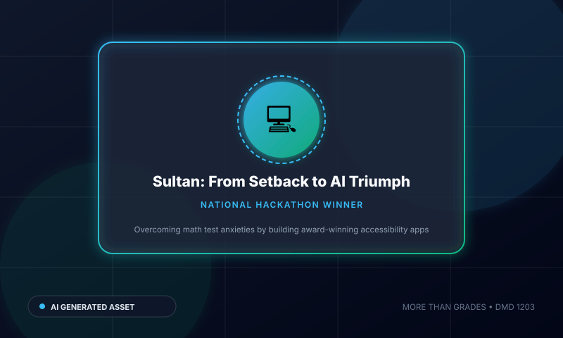
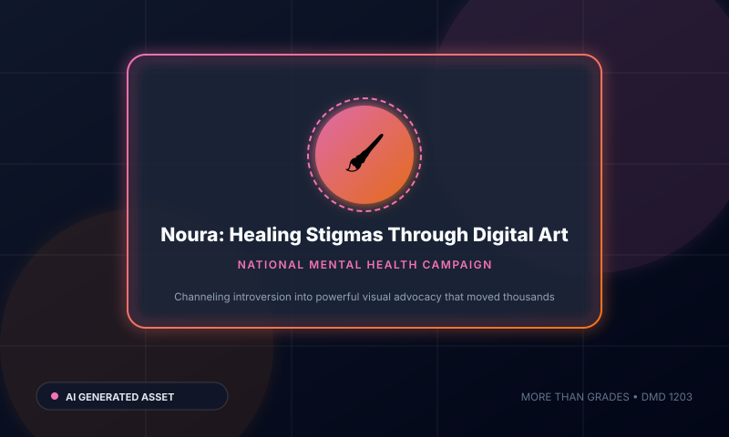

Inspiring Journeys..
When Grit Triumphs Over Examination Metrics
An exceptional 5th feature page engineered to provide an interactive storytelling archive. Here we present fictional, highly authentic student case studies generated through artificial intelligence, accompanied by transparent prompt iteration logs that detail our multi-stage engineering methodology.

Sultan: From Struggling in Algebra to National Hackathon Gold
In the tenth grade, Sultan received a mediocre 'C' on his midterm mathematics paper. Feeling intense pressure from family expectations, he concluded that he simply lacked analytical intelligence. Yet in his evenings, he immersed himself in dissecting open-source Python code, automating campus schedules, and building accessibility scripts.
The following year, Sultan assembled a team for the UAE National AI & Robotics Hackathon. His team developed an intelligent computer-vision tool enabling visually impaired commuters to interpret municipal transit signals, earning First Place nationwide. His school realized that a single algebra test had never been capable of measuring his real-world engineering genius.
“My algebra test score showed I hadn't memorized steps on a rubric.. but my coding project proved I could solve tangible problems that help real people!” — Sultan
Noura: Digital Canvases Healing Adolescent Stigmas
Noura grappled with intense social anxiety and public speaking fears; presenting before classroom peers frequently left her trembling, resulting in consistently low oral participation marks that caused her to feel invisible.
She found solace in creating digital illustrations that captured the silent burden of student stress and isolation, sharing them anonymously on a youth creative portal. Her artwork resonated deeply across thousands of students and teachers, eventually being selected as the official graphic banner for a UAE youth mental wellness campaign.
“My voice shook whenever I had to speak at a podium.. but my digital art spoke with clarity, reaching hearts across the nation without uttering a single syllable.” — Noura


Khaled: Athletic Grit Conquering Imposter Syndrome
Khaled was diagnosed with attention-deficit traits early in school, finding it immensely challenging to sit motionless through four-hour lecture marathons. He found purpose in distance running and athletics, discovering that physical fatigue cultivated mental resilience.
He translated athletic periodization to his study habits: establishing 30-minute interval study blocks, incorporating standing desks, and launching a campus morning running club that pairs physical fitness with peer study check-ins for learners navigating similar struggles.
“In a marathon, you don't win by sprinting furiously at the start; you win through steady pacing and resilience when your legs ache. Education and life follow the exact same law!” — Khaled